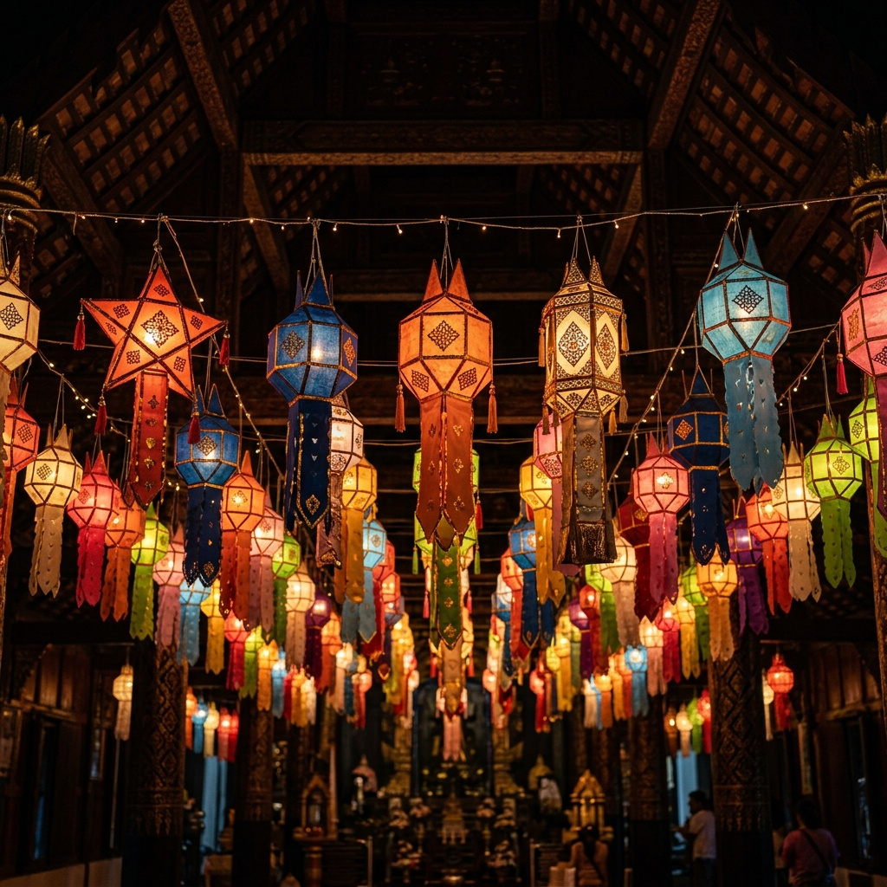
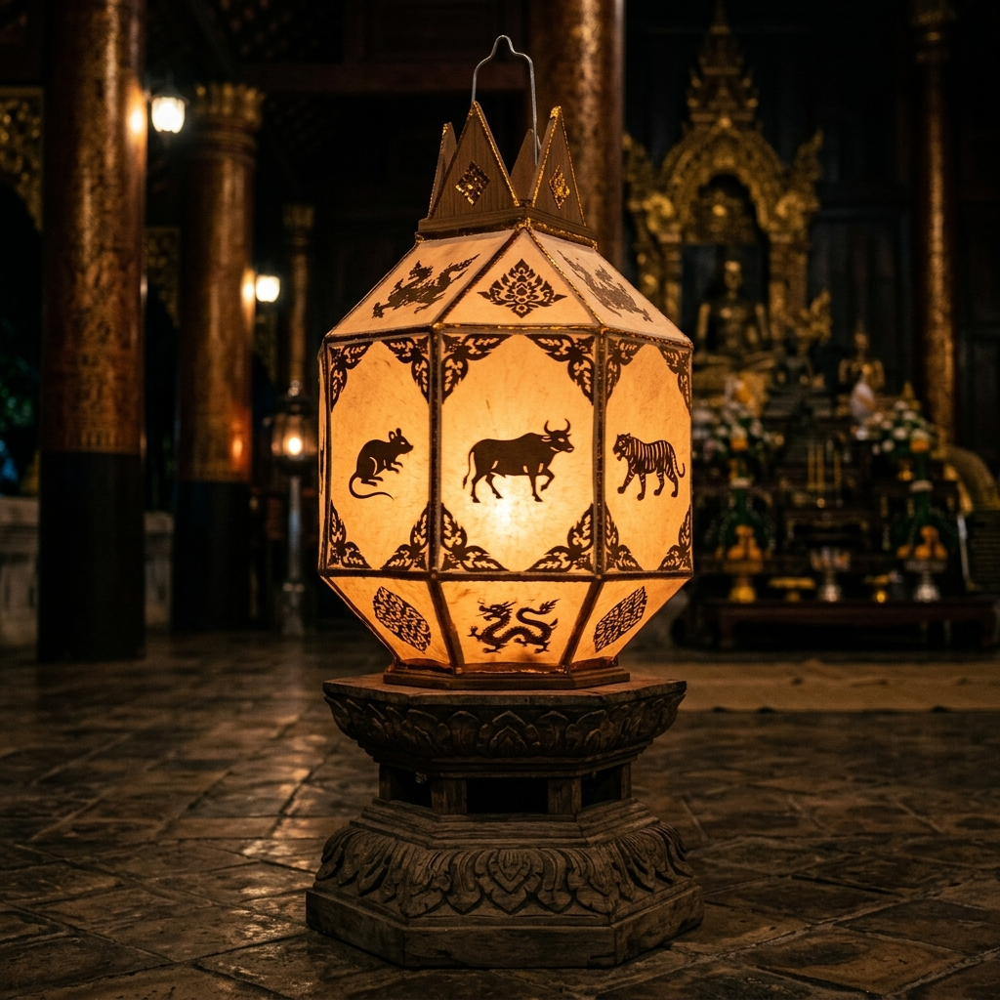

ความหมายของแสง
การปล่อยวาง
สู่สรวงสวรรค์
การปล่อยโคมลอยเป็นสัญลักษณ์ของการปล่อยวางความทุกข์

ความหลากหลายของโคมล้านนา

โคมแขวน
โคมที่ใช้ประดับตกแต่งตามวัด

โคมผัด
โคมหมุนที่มีภาพเงาหมุนวนอยู่ภายใน

โคมถือ
โคมขนาดเล็กที่มีด้ามถือ

โคมลอย
โคมที่ลอยขึ้นสู่ท้องฟ้า
ทำโคมเองได้ — DIY Guide
5 ขั้นตอน
1 / 51. เตรียมโครงไม้ไผ่วงกลม